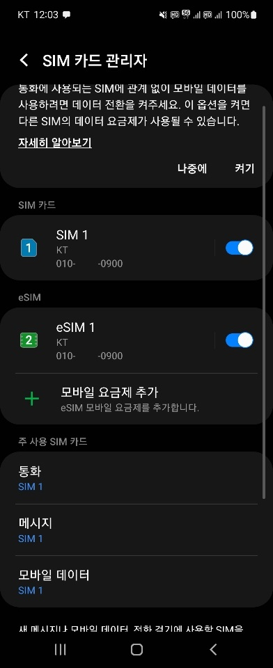

대리점이나 플라자 내방이 어려운 상황에서 프로파일 활성화가 안되어 있는 경우 안내
KT닷컴 경로 : 상품 > 모바일 > 듀얼번호/eSIM > 오른쪽 eSIM 클릭
https://product.kt.com/wDic/productDetail.do?ItemCode=1545
밑으로 내려가보면 QR코드도 있고
QR이 안될때 접근하는 단말기 메뉴 경로
URL 주소와 같이 eSIM발급 방법이 잘 나와 있습니다.
QR을 인식하려면 일단 핸드폰이 데이터가 가능한 상태여야하므로
eSIM으로 메인번호를 개통 중이라면 와이파이, 테더링 등이 연결되어 있던지
eSIM으로 듀얼번호를 개통 중이라면 정상적으로 데이터 사용이 가능한 심(SIM1)으로 설정이
되어 있어야 됩니다.
※ 설정 > 연결 > SIM 카드 관리자 > 주 사용 SIM 카드 > 모바일 데이터에
제대로 개통 안된 SIM2로 되어 있으면 모바일 이용 불가
※방법1.
eSIM 개통을 원하시는 핸드폰의 카메라로
아래 QR코드를 촬영해주세요.
※방법2.
삼성단말이라면 아래의 방법으로 eSIM을 발급할 수도 있어요
‘설정 > 연결 > SIM 카드 관리자 메뉴’에서
‘모바일 요금제 추가’를 선택해 주세요
※방법3.
단말의 OS별로 해당하는 아래의 활성화 코드를 직접 입력해주세요.
OS별 아래 "KT 공통 주소" 표기란에 입력해주세요
ㅇ삼성 :
LPA:1$kt.prod.ondemandconnectivity.com
설정 > 연결 > SIM 카드 관리자 메뉴 > 모바일 요금제 추가 >
통신사 QR 코드 스캔 > 화면 하단 ‘개통 코드 입력’ 버튼 클릭
ㅇ아이폰 :
kt.prod.ondemandconnectivity.com
설정 > 셀룰러 > 셀룰러 요금제 추가 >
카메라 활성화 화면 하단 ‘세부사항 직접 입력’ 클릭
방법 1,2,3 중에 하나만 제대로 진행이 되면
프로파일 설치 / 활성화 뜨는거 확인하고
듀얼번호 결합되어있는지까지 확인하시면 됩니다.
P.s 이미 eSIM 프로파일이 삭제된 상태라면
유심변경이 필요하므로 내방 안내가 필요합니다.
